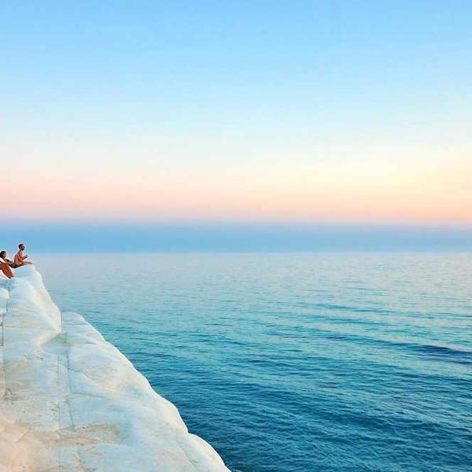
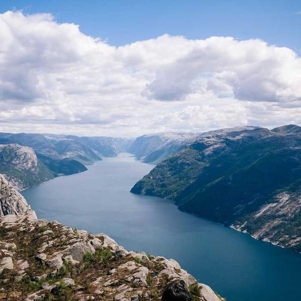

This was from a fabulous trip to the coast of Greenland with my family. The water was lovely – but very cold!A picture of the Golden Gate Bridge. New York! New York!

Another great photo from Greenland. It's a river valley where a glacier used to be.The waterfall made such a lovely sound. I could have fallen asleep!